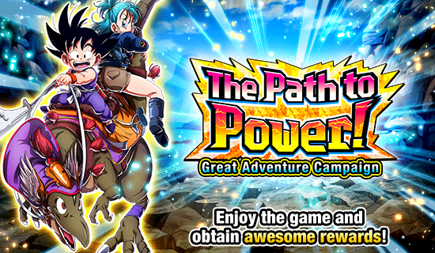
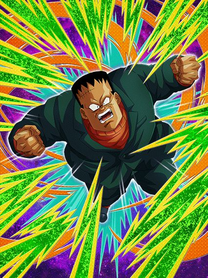
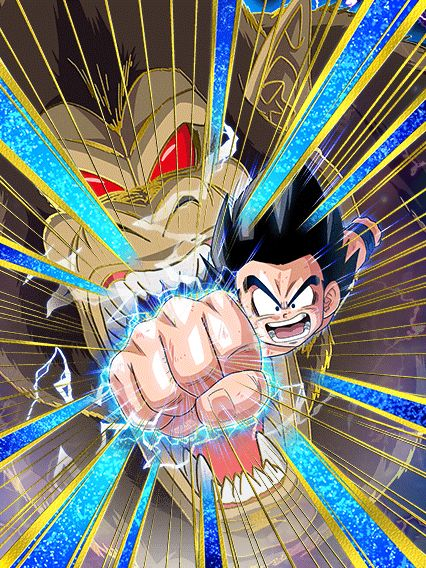
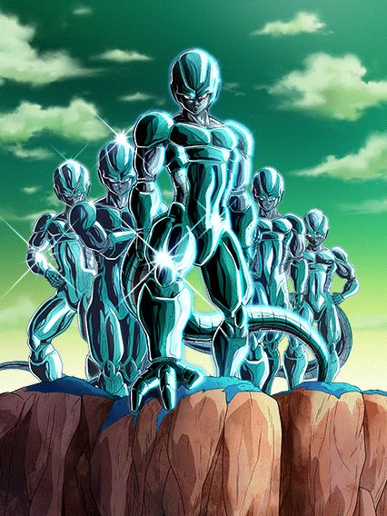
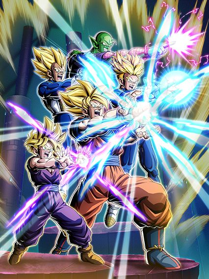
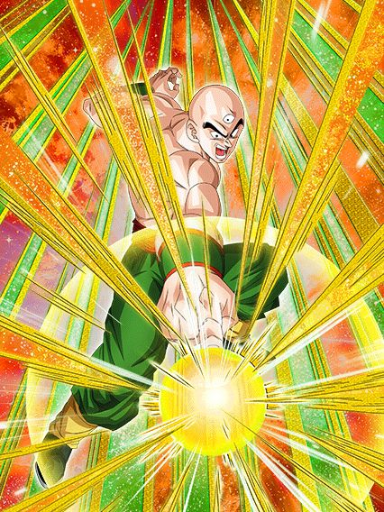
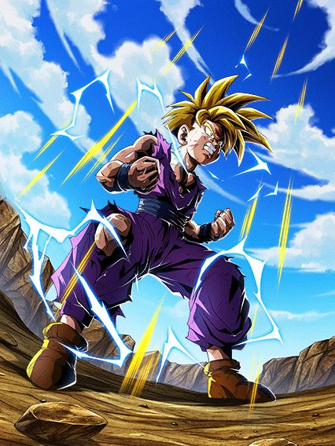
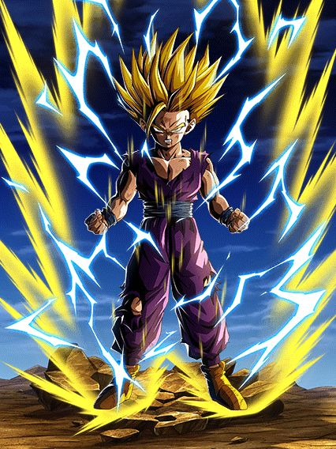
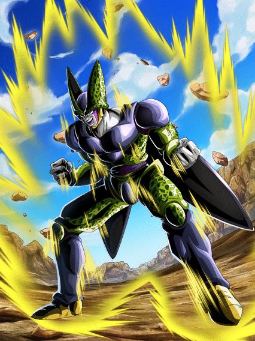
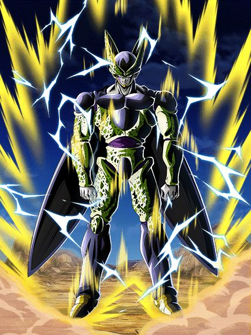

A celebração que estranhamente teve bastante coisa pra fazer.
Seria uma celebração bem simples se não juntassem com o dia dos namorados gringo e tmb jogassem os ezas do gohan e cell aqui, oq é super bizarro e o global merecia morrer por isso, mas graças a isso teve pelo menos bastante coisa pra fazer no mês
")
Uma brisa de ar fresco que era necessária faz um tempo.
Depois de vários e vários cards que precisavam tomar 80 mil ataques ou desviar da mãe ou mandar 970 supers seguidos, esse card se resume a: Pegue 7 orbs, cabou.
Animações muito decentes, suporte muito bom, e no geral um personagem q consegue se segurar sozinho sem precisar de um time em volta e tals (só precisa pegar pelo menos 5 orbs se não vc morre), uma pena que o banner dele teve suas inconveniências..

É...
Em geral, card bom, um pouco frágil as vezes mas útil pra caramba, e, tem pelo menos 1 ano desde a aparição dele e não teve mais nenhum personagem com suporte de redução de dano, oq mostra o quão valioso é esse carinha

Ele é um tank, e é basicamente isso.
Esse cara é um personagem muito específico, ele literalmente não existe sem o gokuzinho no time, mas se ele estiver, ele vira um deus
Ele não dá muito dano, não tem crítico ou 39 adicionais, ele só é um tank, mas ele é um tank tão insanamente bom..
Em resumo, depois do turno 5 ele é completamente invencível, o cara tem 80% de redução de dano MAIS o suporte do gokuzinho se tiver junto, é absurdo, nada dá dano nele..
Se pelo menos todos os cards secundários fossem bons assim né 💀

Certamente o rapaz chamado active skill estourada.
Infelizmente esse card não fez quase nada, as mudanças no eza foram boas mas não fizeram dele um top tier ou algo assim, ele só é usável de novo em algumas paradas mas não numa red zone ou sei lá, bem triste.

O retorno de uma lenda e um spoiler do dia dos saiyajins q viria.
Eu gosto desse card, ele é o tipo de card que não é um deus em nada em específico e isso faz dele algo muito versátil pra usar em qualquer time, além de ele ser o quadragésima quinquagésimo buff para os gods.
É um card bom, mas eles seguraram nesse eza, pelo menos ele veio no global primeiro e ficou assim por sei lá 6 meses? Infelizmente chegou sem uso no jp.

Eu quando um bando de F2Ps que são praticamente idênticos.
Todos esses caras tem a mesma passiva com coisas mínimamente diferentes
Todos tem 120% de ATK e DEF, são suportes pros respectivos tipos e aumentam o suporte e um pouco da passiva com 5 orbs pegos
O dabura ganha 70% de chance de stunar o inimigo
O grande saiyaman tem 30% de chance de desvio
O kuririn recupera 10% de HP
O nappa tem 50% de chance de critar
E o kame tem 30% de chance de defesa ativa... Qual é irmão
Enfim, é, como esperado, nada aqui é útil, certamente os ezas de todos os tempos..

Um dos cards que mais sofreu pela distância do global e jp.
Eles são um card até decente, tem uns números bons, suporte pra artificial life forms, adicionais direto no kit.. pô
Quando eles lançaram no jp eles eram um card decente, mas chegou no global tarde demais.. agora já não é mais aquela coisa
Uma pena.

Os devs realmente cozinharam quando decidiram que, de 3 LRs carnival, 2 seriam o goku ssj (e futuramente 3 de 5 seriam o goku).
Esse card é interessante, leader skill boa pra battle of wits apesar do piccolo laranja ter uma leader skill mais abrangente, 50% de ataque no super pros aliados e 50% de defesa pra qualquer super class, bastante ki, crítico e até adicional garantido oq é muito bom.
Outro ponto positivo desse card é a escolha no nome, já que ele é chamado apenas de Super Saiyan Goku e não algo tipo Super Saiyan Goku (Z-Fighters) oq ferraria os links e deixaria o card sem categorias, tipo um certo outro card chamado android 17..
O grande problema desse card é ter que levar um total de 10 ataques pra estar full buildado, o que, caso vc consiga por milagre, é bom demais já q o rapaz ganha scouter pra sempre e mais ki.
")
uhhhh tá?
Esse cara tava no banner do goku carnival e acho q é por isso q ele ganhou eza..? Sei lá
Ele era pra ser um suporte pra otherworld warriors pelo jeito, já q vc obrigatoriamente precisa deixar ele no slot 3 se não ele não tem metade da passiva
Enfim, ele tenta ser um suporte com um desviozinho qualquer mas ehhhh.. não dá né, categoria morta, time morto, e ironicamente esse goku tmb.

Buffs com múltiplos inimigos.
Card F2P aleatório que é bem ehhh.. nada de muito especial não
Precisa de um time warriors raised on earth, múltiplos inimigos e que alguns deles estejam debuffados, com certeza não é o tipo de card usável em qualquer evento de mínima dificuldade.

O nascimento de um deus.
Tretas depois, o gohan agl surge no global finalmente, obrigado akatsuki por ser incompetente..?
O famoso card de stackar defesa ganha um buff ainda melhor, já que estando acima de 58% de HP, vc tem defesa ativa, e de novo, a combinação de stackar e ter defesa ativa se mostra absurdamente quebrada
O gohan buildar 10% de ATK e DEF por turno em 7 turnos era um buff horrível e impossível de chegar, agr ele aumenta pra 80% no total e em 3 turnos já tá buildado, maravilha
Ele tmb ganhou 50% de chance de critar contra um inimigo androids, mas considerando parte da active dele, é um buff bom
E falando da active, vamo lá que coisas acontecem
Condições de active skills não podem ser alteradas com um EZA a não ser que o jogo implemente uma atualização que faça isso, oq significa que o gohan não teve a sua condição super fácil de transformar alterada
MAS, agora é muito mais tranquilo transformar o gohan doq em 2019, já que usando os gods de líder vc pode levar o hacchan, ou os gammas no time, facilitando muito em transformar o gohan, já que quando vc perder vida, se sua defesa ativa acabar vc pode transformar na hora e destruir tudo no jogo
Além de que obviamente, com a red zone red ribbon, tem bastante androids de boss lá pro gohan cozinhar
E já que falei de cozinhar..

Se vc chegou aqui, vc venceu a partida.
O gohan se torna o nuker mais forte do jogo, tendo o maior valor de ATK de todos na minha opinião

Olha, eu realmente gosto pra caramba do gohan pq o eza ajudou demais essa parte do card, agr ele é orb changer duplo, finalmente tem ATK e DEF no começo do turno, e tem óbviamente o dano absurdo
É legal que agora ele tem todos os buffs, mais a chance insana de crítico, junto com o buff de 59% de ATK se tiver um super saiyan goku com ele (de preferência um que compartilhe 7/7 links com ele) e agora o gohan consegue lançar muitos adicionais, todos que aumentam ainda mais o dano e a defesa dele, q é meio desnecessário já que quando vc lembra q esse cara stacka defesa em ssj e toda a defesa dele é passada pro ssj2, então dependendo de quando vc transformar, vc vai dar ataques de 20 milhões com crítico e mais de um milhão de defesa, literalmente um monstro
É exatamente por isso que, mesmo que seja difícil fazer esse cara aparecer, quando ele aparece, já era pra qualquer boss.

A definição pura de "esperem e deixem ele cozinhar".
Esse cara é muito engraçado, ele na forma base é super simples e horrivelmente ineficaz, o cara tem buffs baseados em inimigos 💀
O plano é cair abaixo de 40% de HP e transformar o mais rápido possível, pq mlk, se vc ficar trancado nessa forma vc tá muito ferrado..

Uhh com licença senhor, você derrubou o BALANCEAMENTO DESSE CARD
Esse cara literalmente vira um deus transformado, por onde eu começo?
Bom, ele cura 100% da vida (balanceado), é orb changer pra rainbow orbs, ganha 3% de redução de dano por orb pega (balanceado)...
Além disso ele é um quase nuker, já que quanto mais orbs vc pegar, mais insano ele fica (o total é 8 orbs q dão 120% de ATK e DEF a mais), e pra completar ele tem uma active que dá um dano absurdo e toda vez q ele estiver com 24 de Ki ou no turno da active, ele tem 100% de ATK a mais e 50% de chance de crítico, como faz pra balancear?

Eu amo esse card, as condições de transformar ele são bem menos específicas que o gohan e ele é muito absurdo transformado, é realmente uma pena q ele na forma base seja tão mid..
Você chegou ao fim dessa página!
Obrigado por ler tudo, e fica a vontade pra ver outras